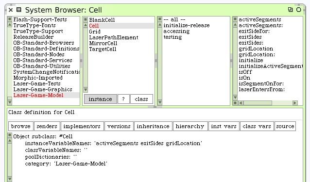
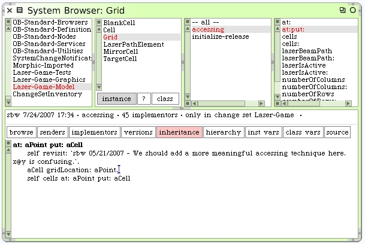

We'll also need to enhance our cells. Each cell should store its own grid location. This will make navigation and position calculations easier. Without the stored location, we can still find specific cell locations within the grid by scanning through all the cells until we find the identical one we are looking for, then we would answer that cell's key (a position) in the cell dictionary. Holding the location within the cell is easier. Add the "gridLocation" instance variable and its accessors.
We will have to modify the Grid code that adds cells so that each one is given its location.
